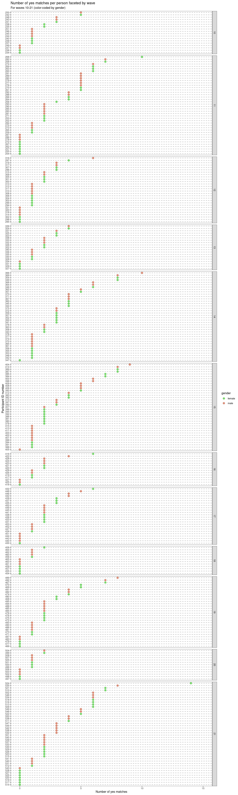
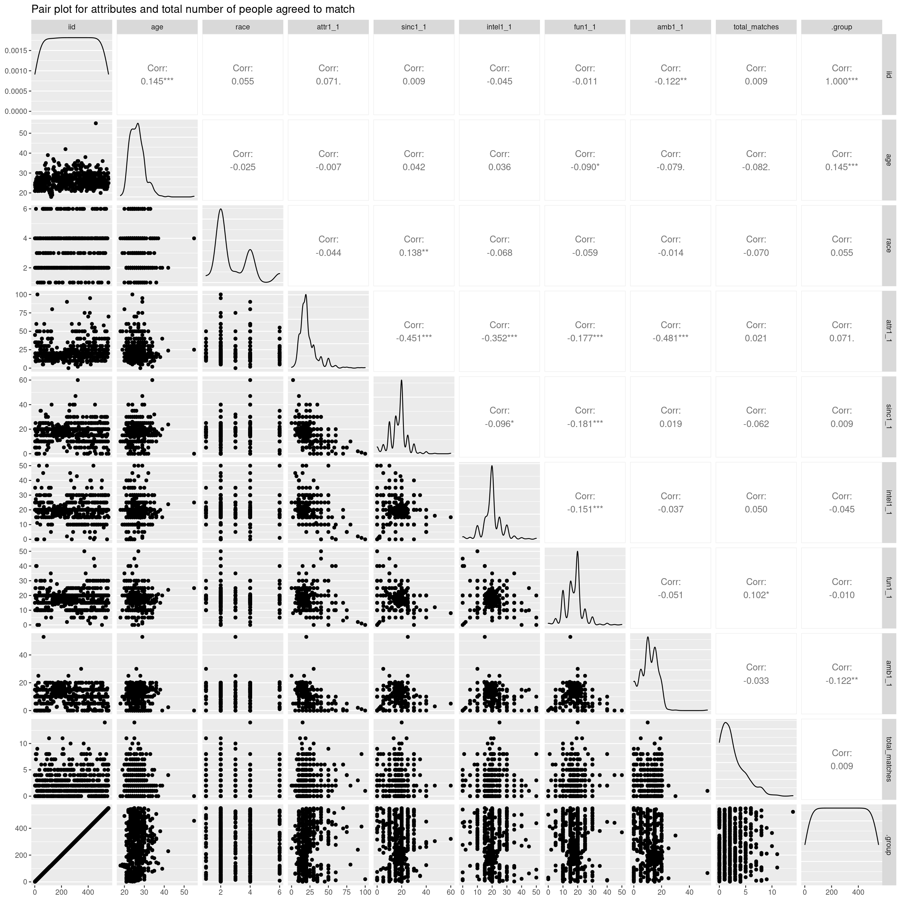
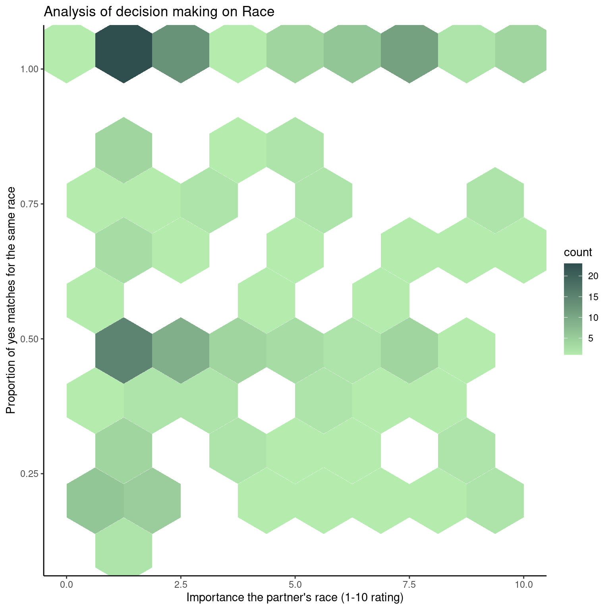

Chapter 5 Results
5.1 Representation of paricipants by different categories
First, let us check the representation of our participants. This answers the question if the sample of students participating in this research experiment is truly randomized. This can help us know if there is/are a group of people that is/are over-represented. In other words, it tells us about the selection bias.
We have chosen four characteristics of the participants: field of study, age, race, and intended career. Here are the bar plots for the same.
Note: The field, race, and career codes are summarized in the data key.
Here are the inferences from these plots:
1. For field of study
We can see that about 23% of the participants are from the 8th field of study, which is Business/Econ/Finance. This represents the highest percentage of students. Considering that this experiment was conducted by professors from the Columbia Business School, a lot of students from that field were expected. This is followed by fields 10 (Biological Sciences/Chemistry/Physics) and 5 (Engineering) representing the 2nd and 3rd highest percentages.
The 17th field of study, which is Architecture, constitutes about less than 1% of the participants. This is the least represented group in terms of field of study. Before that, comes field 12 (undecided), before which comes field 18 (other).
2. For age group
We can observe that most students are between the age 20 and 30, with about 68 people with age around 27. Almost all the participants are between 18 and 39 years of age, with the exception of a few of age 42 and 55.
3. For race
We can observe that race 2, which is European/Caucasian-American is the highest represented group here, which has about 4700 participants. Second most highest represented race is 4, i.e., Asian/Pacific Islander/Asian-American with about 2000 participants.
The count for race not specified is the least among all the races. Apart from that, the least represented race is Black/African American with about 450 participants.
4. For intended career
Here, we can observe that the intended career of most students is career 2 and 7, i.e., Academic/Research and Banking/Consulting/Finance/Marketing/Business/CEO/Entrepreneur/Admin respectively. They constitute for about 155 and 135 participants respectively. The least represented career field is career 17, which is Architecture. Similar trend was seen in the representation by field of study.
5.2 Number of yes matches per participant
In the original experiment, the variable match is the target variable. This indicates if the person was matched to the other person or not. We can use a Cleveland dot plot to show the number of yes matches each participant got. As mentioned before, we are using waves 10-21. Moreover, we faceted them by waves and color coded by the gender so we can also understand patterns among genders and within individual waves.

Here, we can observe that the maximum number of yes matches of participants in waves 10 and 13 is always less than 5. Also, the highest number of matches for waves 20 and 18 is 3. Waves 11, 14, 15, 18 and 21 have a wide variety of matches for different people.
Moreover, all waves have participants who are not matched with other people. The number of participants across all waves who did not get matched seem to have an even number of males and females. The most matched participant is a female from wave 21 who got 14 matches.
5.3 Analysing correlation between the chosen variables
One of the important questions we want to address is visualizing whether the features in the dataset exhibit correlation among themselves or with the target variable that tells whether the pair matched or not. This is important as it will help us come up with blatant patterns observed in features that help in formulations of simple if-then rules. For the purposes of this visualization, we have narrowed down comparison of ratings to a specific question that were asked prior to the event - Distribute a score of 100 among the five attributes in the order of importance that you would like to see in your potential date.
This question is interesting to inspect if the attributes of what people look for in their potential partners bear any correlation among themselves and also with the actual number of people they agreed to match with.

Some of the interesting inferences we can make regarding the plots are,
- The distribution of most of the attributes are close to normal except for ambition with seems to be right skewed. A relatively high number of participants have given a low priority to ambition of their potential partners as a deciding factor.
- While most of the features are weakly negatively correlated almost exhibiting no correlation at all, the pair of feature sincerity, attractiveness and sincerity, intelligence are negatively correlated by the greatest amount. This tells us that people who gave a high preference to sincerity gave a low preference to intelligence and attractiveness and the other set of people weighed attractiveness and intelligence over sincerity.
- The age of the participants are mostly between 20 and 30, while one senior participant over 50 did not match with anyone, evident by the anomaly of the farthest point in the age vs total_matches plot.
- The trend that is seen in all the plots of attributes of attractiveness, sincerity, intelligence, fun and ambition is that, as the rating or the priority of certain feature increases, the number of matches goes down, for a few points. This is justifiable with the points that are to the farthest right at the bottom. This is expected as participants who have a really high expectation on one feature might not find someone suitable to meet their high expectations on that feature.
- It is interesting to note that the same plot of features vs total matches also exhibits some anomaly. There seems to be one point in all these plots that have a relatively medium level rating/priority while the number of matches is pretty high. This can be verified by the top most point to the left of the plots. There were some participants who are estimated to have based their criteria of matching on factors others that the ones that were rated on. This can be infered as they have a relatively high number of matches than their peers who matched less, given the same priority for those features.
5.4 Change of feature perception with time
Here, our objective is to find that if a participant’s perspective (ratings) on which features they are looking for in the opposite sex change with time, especially before and after the speed dating experiment. For this part, we chose one question in particular from the survey:
What you look for in the opposite sex?
Now, this question was asked to the same people multiple times. We specifically choose three times. The times we chose were:
Asked before the speed dating experiment
Asked the day after the speed dating experiment
Asked 3-4 weeks after the speed dating experiment
To answer our question, we decided to use parallel coordinate axis plots since it helps us to visualize multiple variables at once and also account for correlations among the variables by comparing the direction of the lines (which are our participants in this case). We color coded them by gender to find more inferences. Again, we used waves 10-21 for this plot.
We did this for each of the five features: Attractiveness, Sincerity, Intelligence, Fun, and Ambition. We normalized the values of each variable in the plots using the uniminmax scale. We did not use splines because we believe we lost information if we include it.
Here are the plots:

Here are the interpretations from the above plot:
1) For Attractiveness
Since most lines go slightly upwards from attr1_1 to attr1_2, we can say that people give slightly more importance to the attractiveness of the other person a day after the speed dating experiment. From attr1_2 to attr1_3, most lines go upward but some go downward. Hence, in general, most people give significant importance to the attractiveness of the partner. We can observe that few people drastically bring their rating from 25% to 100%, while some people reach 0% rating in 3-4 weeks. In general, the importance of attractiveness usually keeps increasing for males more, while there is no pattern for females. However, the increase of importance for females is more drastic in females.
2) For Sincerity
Since most lines go upwards from sinc1_1 to sinc1_2, we can say that people give more importance to the sincerity of the other person the next day. From sinc1_2 to sinc1_3, most lines go downward indicating that as most time passes (line 3-4 weeks), most people give less importance to the sincerity of the partner. For females, the importance of sincerity increases the day after the experiment, but reduces drastically in 3-4 weeks. For males, their sincerity importance level remained steady with time.
3) For Intelligence
Most lines go upwards from intel1_1 to intel1_2, some go downward, and some remain steady (especially the one with zero rating). Generally speaking, we can say that people give more intelligence to the sincerity right after the speed dating experiment. From intel1_2 to intel1_3, most lines remain steady, many go downward, and some go upward indicating that as most people remain around at similar levels or remain indifferent of their partner’s intelligence. For most males, the importance of intelligence increased after the experiment and remained steady afterward. For most females, it first increased too and then decreased.
4) For Fun
There does not seem to be a pattern from fun1_1 to fun1_2 or from fun1_2 to fun1_3 since many lines go upward and downward both times. Moreover, the variation in the range of ratings keep increasing from fun1_1 to fun1_3. Here too, the ratings of people with zero rating remained steady. No pattern is observed for particular genders.
5) For Ambition
Since most lines go upwards from amb1_1 to amb1_2, we can say that people give more importance to the ambition of the other person the next day. From amb1_2 to amb1_3, most lines go downward indicating that as most time passes (line 3-4 weeks), most people give less importance to the ambition of the partner. Here too, the ratings of people with zero rating remained steady. Moreover, some drastic increase (about 60% to 100%) and decrease (60% to 0%) of the importance of ambition is observed from amb1_1 to amb1_3. For females, the importance of ambition increased after the experiment, but decreased again in 3-4 weeks. For males, there seems to be an even distribution of people with increasing and decreasing importance.